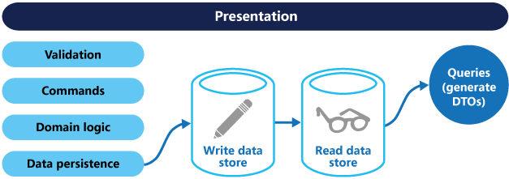

微服务架构中，有一些常用的模式用于服务之间的通信/协调。本文介绍几种常用的模式：Database per service,Event Sourcing(事件溯源),CQRS(Command-Query Responsibility Segregation, 命令和查询责任分离模式), SAGA 。
Event Sourcing是原子性地更新数据库，然后发布对应更新操作的事件。CQRS(Command-Query Responsibility Segregation)通常与Event Sourcing一起使用，SAGA用于解决跨服务的分布式事务。
Database per service
微服务中，每个服务都有自己独立的数据库，这是因为：
- 服务必须松散耦合，以便它们可以独立开发、部署和扩展
- 一些业务事务必须强制执行跨越多个服务的数据。例如，下订单用例必须验证新订单不会超过客户的信用额度(Available Credit)。其他业务事务，必须更新多个服务拥有的数据。
- 一些业务事务需要查询多个服务拥有的数据。例如，
View Available Credit使用必须查询Customer以找到creditLimit和Orders以计算未结订单的总金额。 - 某些查询必须连接由多个服务拥有的数据。例如，查找特定地区的客户及其最近的订单需要客户和订单之间的连接。
- 数据库有时需要备份和分片，才能进行扩展。
- 不同的服务有不同的数据存储要求。对于某些服务，关系数据库是最佳选择。其他服务可能需要 NoSQL 数据库，例如擅长存储复杂、非结构化数据的 MongoDB，或旨在高效存储和查询图形数据的 Neo4J。
所以，一个微服务的数据的持久数据只能保持为该服务的私有，并且只能通过其 API 访问。单个服务的事务仅涉及其数据库。
Event Sourcing
Event Sourcing解决的问题是:
如果发送消息是数据库事务的一部分，然后原子性地执行事务并且发送消息？
需要考虑的地方：
- 2PC(两阶段提交)耗时就，不是选项
- 如果数据库事务提交，则必须发送消息。反之，如果数据库回滚，则消息一定不能发送
- 必选保证发送到broker消息的顺序，和服务创建消息的顺序一致。
Event Sourcing可以用来解决这个问题。
Event Sourcing将一个业务实体（例如，Customer/Order）的状态，保存为一串状态变化的事件。每当业务实体的状态发生变化时，都会将新事件附加到事件列表中。由于保存事件是单个操作，因此它本质上是原子的。
下面是Event Sourcing的例子：
Outbox模式
Outbox模式是Event Sourcing的应用。
使用关系数据库的服务将消息/事件作为本地事务的一部分插入到发件箱(Outbox)表（例如 MESSAGE）中。使用 NoSQL 数据库的服务将消息/事件附加到正在更新的记录（例如文档或项目）的属性。一个单独的消息中继进程(Message relay)将插入数据库的事件发布到消息代理(broker)。
从message relay到message broker一般有2种方式，Polling(轮询), 和Transaction Log Tailing（事务日志尾追加）。
Polling
如果使用的是关系型数据库，可以轮询没有发布的消息：
1 | SELECT * FROM OUTBOX ORDERED BY ... ASC |
接下来，MessageRelay 将这些消息发布到消息代理，将一条消息发送到其目标消息通道。最后，它从 OUTBOX 表中删除这些消息：
1 | BEGIN |
轮询数据库是一种简单的方法，在小规模下运行良好。缺点是频繁轮询数据库可能会很昂贵。
Transaction Log Tailing
一个复杂的解决方案是让 MessageRelay 跟踪数据库事务日志（也称为提交日志）。应用程序所做的每个提交的更新都表示为数据库事务日志中的一个条目。事务日志挖掘器可以读取事务日志并将每个更改作为消息发布到消息代理。
CQRS
CQRS解决的问题是：
在微服务架构中，实现从多个服务中检索数据的查询？
CQRS(Command-Query Responsibility Segregation), 会分离对数据存储的读写操作。通过定义只读的备份的视图数据库(view database),用来支持查询。视图数据库通过订阅写数据库的操作来保持更新。
CQRS 将读取和写入分离到不同的模型中，使用命令(command)更新数据，使用查询(query)读取数据。
为了更好地隔离，您可以将读取数据与写入数据物理分离。在这种情况下，读取数据库可以使用自己的针对查询进行优化的数据模式。例如，它可以存储数据的物化视图，以避免复杂的连接或复杂的 ORM 映射。它甚至可能使用不同类型的数据存储。例如，写数据库可能是关系数据库，而读数据库是文档数据库。

SAGA
SAGA解决的问题是
如何实现跨服务的事务？
SAGA 设计模式是一种在分布式事务场景中跨微服务管理数据一致性的方法。SAGA是一系列事务，它更新每个服务并发布消息或事件以触发下一个事务步骤。如果一个步骤失败，SAGA会执行抵消前面事务的补偿事务。
有两种协调 sagas 的方式：
- Choreography: 每个本地事务发布触发其他服务中的本地事务的域事件
- Orchestration: 编排器（对象）告诉参与者要执行哪些本地事务
SAGA的问题
SAGA的问题在于缺乏ACID事务的隔离特性。这是因为一旦该事务提交，每个 saga 的本地事务所做的更新对其他 saga 立即可见。
- 丢失更新(lost update):一个
saga覆盖而不读取另一个saga所做的更改。 - 脏读(dirty read):事务或 saga 读取尚未完成的更新。
- 不可重复读(nonrepeatable reads):当不同的 saga 步骤读取不同的数据时，因为读取之间发生了数据更新。
解决方法
- 语义锁(Semantic lock),一种应用程序级锁，其中 saga 的可补偿事务使用信号量来指示更新正在进行中。
- 可以按任何顺序执行并产生相同结果的交换更新(Commutative updates)。
- 重读值,验证数据没有改变，然后更新记录。如果记录已更改，则步骤中止并且 saga 可能会重新启动。
我的公众号：lyp分享的地方